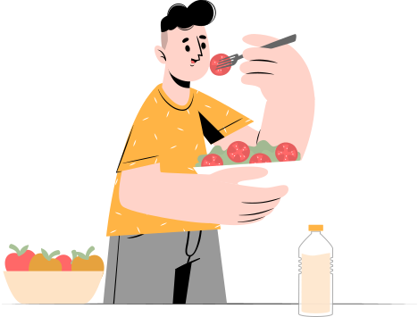

多樣化的餐點，選擇自己需要的健康標的
給予專業以及便利的管道，成就每位追求理想健康狀態的你。
理解不同需求，成就你理想的健康方向

-
01營養師與廚師的協作
結合兩方的專業共同研發，兼顧各種營養比例的同時也不失美味。
-
02豐富食材，多元不膩
機能調理餐為了兼顧美味與營養，特別搭配十種以上食材均衡調配你的每一餐
-
03機能功能，皆予滿足
為不同需求考量，無論營養熱量或是色香味，都能從我們的餐點中找到最適合你的一款！
餐餐吃出新花樣
機能調理餐的三大特色